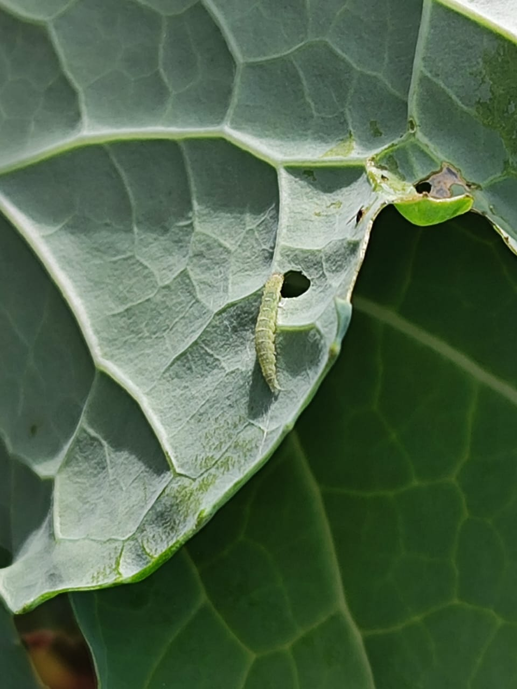

Aprenda maneiras sustentáveis e eficazes de combater a lagarta do pé de couve e proteger sua horta.

Por Amanda Bombana Pasa em 08/06/2024.
A larva da borboleta da couve, cientificamente conhecida como "Ascia monuste orseis", é chamada popularmente de "lagarta-limão". Enquanto a borboleta adulta se alimenta do néctar das flores, as lagartas se alimentam das folhas das plantas hospedeiras, como a couve.
A lagarta da couve é considerada uma praga bastante prejudicial para as plantações. Suas larvas, logo após eclodirem dos ovos, começam a se alimentar das folhas das plantas, causando danos significativos e comprometendo a produção. O controle adequado dessas lagartas é essencial para proteger as plantações e garantir um bom rendimento.
De acordo com o instituto biológico de São Paulo “Ocorre em agrião, brócolis, mostarda, canola, couve-flor, repolho, rúcula e nabiça, sendo esta última uma planta invasora anual, infestante de diversas culturas agrícolas, frequente em culturas de inverno".
Biologicamente os predadores da Ascia monuste orseis são as joaninhas, vespas, microorganismos como fungos, bactérias e vírus.
Como realizar o controle dessas pragas?